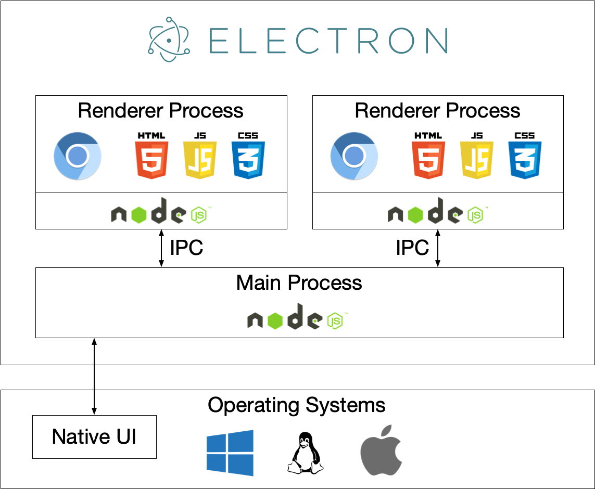
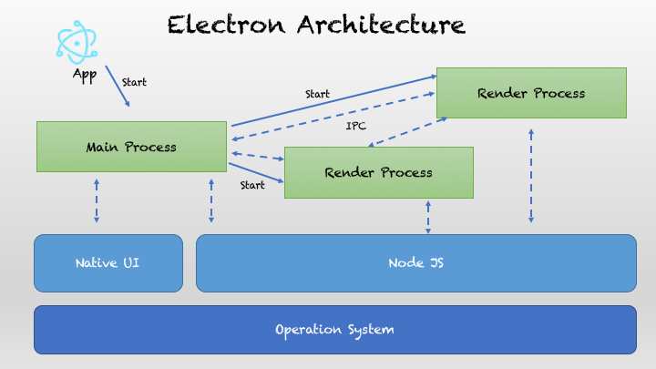
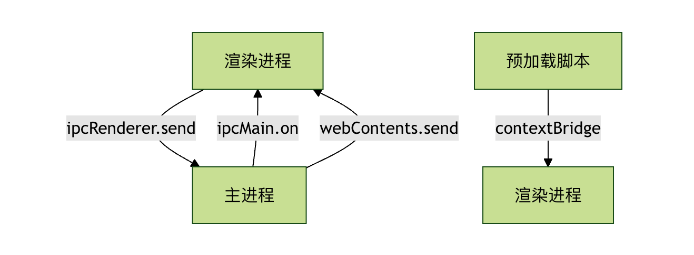
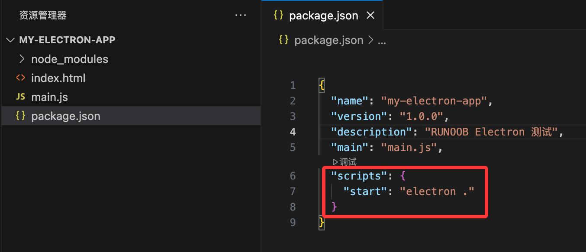
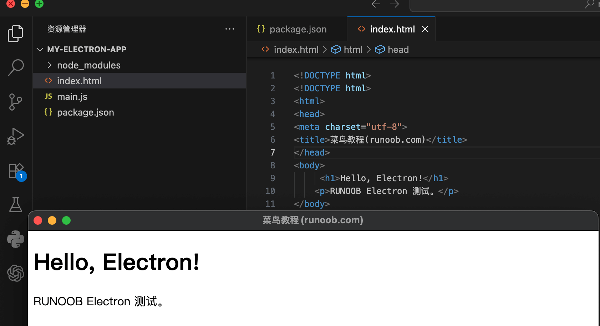
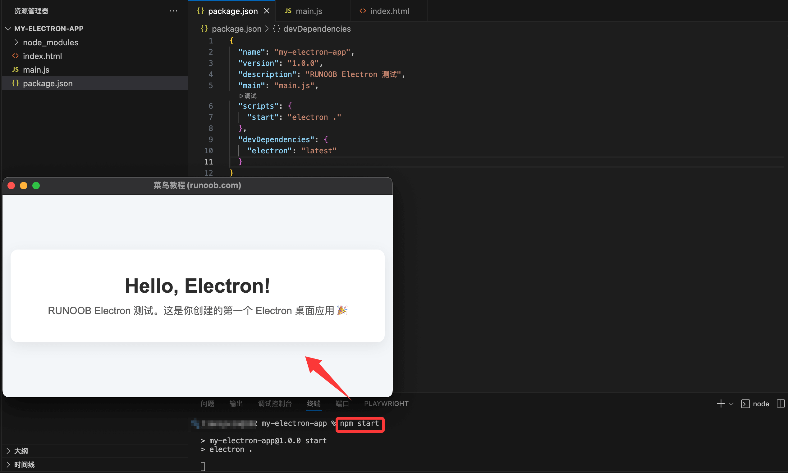
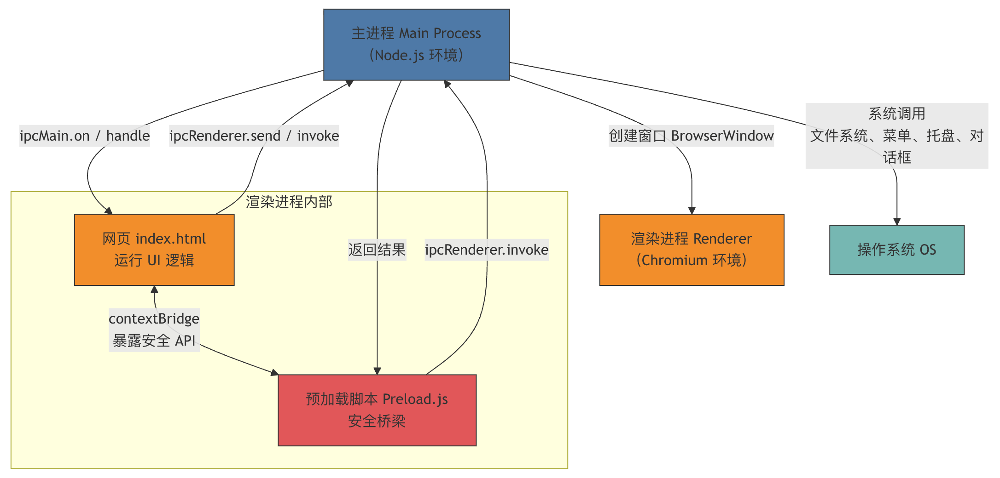

Electron（原名 Atom Shell） 是由 GitHub 开发的一个 开源跨平台桌面应用开发框架。
Electron 是一个开源的框架，专门用于使用 Web 技术（HTML、CSS 和 JavaScript）来构建跨平台的桌面应用程序。
Electron 让我们可以像写网页一样写桌面应用，比如 Windows 的 .exe、macOS 的 .app、Linux 的可执行文件。
Electron = Chromium（浏览器引擎） + Node.js（后端能力） + 桌面应用壳。
学习 Electron 前，掌握这几样就够了：
#id、.class）；想象一下，你平时用浏览器访问网站时，看到的是由 HTML 构建的页面，用 CSS 美化样式，用 JavaScript 实现交互功能。Electron 就像是把一个浏览器打包"起来，让它能够独立运行，不再需要用户手动打开浏览器。
技术组成：
1. 技术栈统一
2. 跨平台支持
3. 开发效率高
假设我们想做一个记事本应用。
在 Electron 中，你只需要：
npm install electron
创建一个 main.js：
然后 index.html 就是普通网页：
运行：
npx electron .
这样我们的网页就变身为桌面应用啦！
Electron 是一个开源框架，把 Chromium（浏览器内核）＋ Node.js（服务器/系统能力） 包裹进一个桌面应用壳，让你用 HTML/CSS/JS 写跨平台的桌面程序（Windows、macOS、Linux）。
关键点：
.exe、.app、.deb 等安装文件。Electron 由 GitHub 开发并维护，最初是为了构建 Atom 编辑器而创建的。
简单来说：Electron = Chromium + Node.js + Native APIs

Electron 让 Web 开发者无需学习新语言就能构建桌面应用，大幅降低了桌面开发的门槛。
Electron 的设计理念是"一次编写，到处运行"（Write Once, Run Everywhere）。
开发者只需要编写一套代码，就能生成 Windows、macOS 和 Linux 三个平台的应用程序。
核心优势：
Electron 适合以下类型的桌面应用开发：
不适合的场景：对 CPU/GPU/内存极度敏感、需要极致原生体验或移动端优先的项目（如大型图形渲染、超低延迟游戏）。
Electron 提供了丰富的桌面端能力，以下是它支持的主要功能：
理解以下几个核心概念是掌握 Electron 开发的关键：
Electron 同时拥有浏览器和 Node.js 的能力，安全配置至关重要。
永远不要在 renderer 中直接开启
nodeIntegration: true，默认关闭以防 XSS 导致任意系统命令执行。
本节从优势和局限两个维度全面分析 Electron，帮助你做出合理的技术选型。
以下是 Electron 相比其他桌面开发方案的核心竞争力：
1. 跨平台开发的便利性
使用 Electron，开发者可以用同一套代码库生成 Windows、macOS 和 Linux 三个平台的应用：
节省的成本：
2. Web 技术栈的优势
3. 强大的功能支持
4. 活跃的社区和生态
了解 Electron 的局限性有助于判断它是否适合你的项目：
1. 性能开销
Electron 应用需要同时运行 Chromium 和 Node.js，这带来了额外的性能开销：
原生应用与 Electron 应用对比：
| 对比维度 | 原生应用 | Electron 应用 |
|---|---|---|
| 内存占用 | 10-30MB | 80-200MB |
| 启动时间 | < 1 秒 | 2-5 秒 |
2. 安装包体积大
每个 Electron 应用都需要打包完整的 Chromium 和 Node.js 运行时：
这意味着即使是简单的应用，安装包也不会小于 50MB。
3. 安全性考虑
由于 Electron 同时拥有浏览器和 Node.js 的能力，如果配置不当，可能存在安全风险：
4. 原生体验差异
虽然可以模拟原生界面，但在某些方面仍有差异：
以下表格帮助你根据项目需求判断 Electron 是否适合：
| 因素 | 权重 | 说明 |
|---|---|---|
| 开发效率 | 高 | 如果团队有 Web 经验，Electron 效率最高 |
| 跨平台需求 | 高 | 需要支持多平台时，Electron 是优选 |
| 性能要求 | 中 | 除非极致性能场景，一般应用可接受 |
| 包体积敏感度 | 中 | 现代网络环境下，50-100MB 可接受 |
| 安全性要求 | 高 | 需要严格遵循安全最佳实践 |
Electron 并非唯一选择，以下是主流桌面开发方案的对比：
如果你是前端/全栈开发者，需要快速把 Web 产品或工具交付到桌面、并能直接使用系统能力，Electron 是极高产、门槛低的选择。
但若你对体积、内存或极致原生体验有严格要求，应考虑 Tauri、Flutter 或原生框架作为替代。
Tauri
NW.js
Neutralino
Flutter Desktop
React Native for Windows/Mac / .NET MAUI / Qt
选择建议：
以下是一些优化 Electron 应用性能和体积的实用建议：
通过一个最小项目快速了解 Electron 的基本结构。
项目文件结构：
my-electron-app/ ├─ package.json # 项目配置与依赖 ├─ main.js # 主进程入口 ├─ preload.js # 预加载脚本（安全暴露 API） └─ index.html # 渲染进程界面
package.json（最简配置）：
main.js（主进程）：
preload.js（受控暴露 API）：
index.html（渲染进程界面）：
在主进程中监听 IPC（补充到 main.js）：
运行：
# 安装依赖 npm install # 启动应用 npm start
开发完成后，需要使用打包工具将应用分发给用户。
常见打包工具对比：
| 工具 | 功能 | 适用场景 |
|---|---|---|
| Electron Builder | 功能强大，支持 auto-update、多平台安装包 | 需要完整分发方案的生产项目 |
| Electron Forge | 开发友好，集成模板和构建流程 | 新项目快速启动 |
| electron-packager | 只打包，不做 installer | 简单的打包需求 |
打包常见步骤：
package.json 的 build 字段（或使用各工具的 config）。以下建议来自实际项目经验，可帮助你避开常见陷阱：
contextIsolation: true，最小化暴露给 renderer 的 API。以下场景不建议使用 Electron：
按照以下路线循序渐进，可以系统掌握 Electron 开发：
可以把 Electron 看成是：
一个多进程的应用容器，内置了一个浏览器引擎 (Chromium) 和一个 Node.js 运行时，
通过进程间通信（IPC）协同运行，实现"网页 + 系统能力"的桌面应用。
它的核心组成是：
| 角色 | 说明 | 类比 |
|---|---|---|
| Main Process（主进程） | Electron 的大脑，控制应用生命周期、创建窗口、调用系统 API | 操作系统管理者 |
| Renderer Process（渲染进程） | 每个窗口运行的网页环境（HTML、CSS、JS） | 浏览器标签页 |
| Preload Script（预加载脚本） | 在渲染前运行，可桥接主进程 API 给网页用 | 安全"中间层" |
| IPC（进程通信） | 主进程与渲染进程间的通信通道 | 电话线 |
| BrowserWindow 对象 | 主进程创建的"窗口容器"，里面加载网页 | 浏览器窗口 |
| App 模块 | 控制应用生命周期（启动、退出） | 总控 |

主进程是 Electron 应用的"大脑"，每个 Electron 应用有且只有一个主进程。它负责：
渲染进程负责显示用户界面，每个 Electron 窗口都是一个独立的渲染进程：
预加载脚本是连接主进程和渲染进程的"桥梁"：
IPC（Inter-Process Communication） 是 Electron 的通信核心。
由于主进程与渲染进程是独立的，所以必须通过 IPC 传递数据。

| 类型 | 主进程监听 | 渲染进程发送 |
|---|---|---|
| 渲染 → 主 | ipcMain.on(channel, handler) |
ipcRenderer.send(channel, data) |
| 主 → 渲染 | event.sender.send(channel, data) |
ipcRenderer.on(channel, callback) |
主进程代码：
渲染进程代码：
| 特性 | Electron | 传统桌面开发 |
|---|---|---|
| 开发技术 | Web 技术 (HTML/CSS/JS) | 原生语言 (C++/C#/Java) |
| 跨平台支持 | 一次开发，多平台运行 | 需要为每个平台单独开发 |
| 开发效率 | 高，利用现有 Web 生态 | 较低，需要学习平台特定技术 |
| 性能 | 相对较低，占用资源较多 | 高，原生性能 |
| 安装包大小 | 较大（包含 Chromium） | 较小 |
让我们创建一个简单的文件管理器应用来演示 Electron 架构：
主进程 (main.js)：
预加载脚本 (preload.js)：
渲染进程 (index.html)：
| 模块名 | 作用 |
|---|---|
app |
控制应用生命周期（启动/退出） |
Menu / MenuItem |
创建应用菜单栏 |
Tray |
系统托盘图标 |
Notification |
系统通知 |
dialog |
打开文件/保存对话框 |
shell |
调用系统默认程序打开文件或网址 |
nativeImage |
操作图片（图标） |
clipboard |
操作剪贴板内容 |
powerMonitor |
监听系统电源事件 |
screen |
获取屏幕信息（多显示器支持） |
由于渲染进程能运行网页，为防止恶意代码攻击系统，Electron 推行以下安全设计：
| 策略 | 描述 |
|---|---|
| 关闭 NodeIntegration | 默认 false，避免网页直接调用系统 API。 |
| 启用 ContextIsolation | 让页面脚本与 Preload API 在独立上下文中运行。 |
| Preload + contextBridge | 明确控制暴露给前端的安全 API。 |
| Content Security Policy (CSP) | 限制脚本来源，防止 XSS。 |
| sandbox 模式 | 可开启沙箱使渲染进程完全隔离。 |
| 验证远程 URL | 不信任的远程内容必须进行白名单校验。 |
1、启动应用 (electron .)
↓
2、执行 main.js（主进程启动）
↓
3、app.whenReady() 触发，创建 BrowserWindow
↓
4、BrowserWindow 启动新的渲染进程（Chromium 实例）
↓
5、preload.js 先执行（在隔离上下文中）
↓
6、index.html 加载并显示（运行前端框架）
↓
7、渲染进程通过 IPC 调用主进程逻辑
↓
8、主进程处理请求、返回结果
↓
9、用户关闭窗口 → 主进程监听 → app.quit()
ipcMain.handle 进行异步桥接。示意：
主进程 (Main) ├── 窗口1 → 渲染进程A (index.html) ├── 窗口2 → 渲染进程B (settings.html) └── 窗口3 → 渲染进程C (dashboard.html)
| 层级 | 技术 |
|---|---|
| 界面渲染层 | Chromium（Blink + V8） |
| 系统接口层 | Node.js（libuv + C++ bindings） |
| 进程管理层 | Electron 内核（C++ + JavaScript） |
| 应用逻辑层 | 你的 JS / TS 代码（Main + Renderer） |
你写的 JS 代码跑在 Electron 封装的 Node 环境里，而渲染界面跑在 Chromium WebView 里。
在安装 Electron 之前，需要准备两个基础环境：
Electron 是基于 Node.js 的框架，因此必须先安装 Node.js。
检查是否已安装：
node -v npm -v
如果输出版本号，说明已安装。
若没有，请前往 Node.js 官网 下载 LTS（长期支持版）。
安装完成后，系统会自动附带 npm（Node 包管理器）。
如果不熟悉 Node.js，可以参考： Node.js
教程。Electron 的安装依赖 npm 或 yarn 管理包。
可以选择：
# 使用 npm npm install electron --save-dev # 或使用 yarn yarn add electron --dev
Electron 的安装方式有两种：全局安装 和 项目内安装。
推荐使用 项目内安装（更安全、更易维护）。
# 创建一个项目文件夹 mkdir my-electron-app cd my-electron-app # 初始化 Node 项目 npm init -y # 安装 Electron npm install electron --save-dev
安装成功后，会在项目目录中出现：
node_modules/ package.json package-lock.json
创建一个简单的 Electron 启动文件：
main.js
index.html
然后在 package.json 里添加启动命令：
"scripts": {
"start": "electron ."
}

运行：
npm start
如果弹出一个桌面窗口，里面写着 "Hello, Electron!" 说明安装成功/p>

| 问题 | 原因 | 解决办法 |
|---|---|---|
npm ERR! code ELIFECYCLE |
权限或缓存问题 | 尝试执行 npm cache clean --force |
electron failed to install correctly |
网络或下载源超时 | 使用淘宝镜像安装（如下） |
Electron 下载包很大（几十 MB），国内可能超时，可以用淘宝镜像：
# 临时设置 ELECTRON_MIRROR=https://npmmirror.com/mirrors/electron/ npm install electron --save-dev
或永久修改 npm 源：
npm config set ELECTRON_MIRROR https://npmmirror.com/mirrors/electron/
| 工具名 | 作用 | 安装命令 |
|---|---|---|
electron-builder |
打包成安装程序（.exe / .dmg 等） | npm install electron-builder --save-dev |
electron-reload |
修改代码后自动重载 | npm install electron-reload --save-dev |
electron-forge |
快速构建模板 | npx create-electron-app my-app |
在上一章节我们已经学会了如何安装 Electron。
本章节我们将一步步介绍如何创建一个简单的 Electron 实例。
打开终端，依次执行：
mkdir my-electron-app cd my-electron-app npm init -y npm install electron --save-dev
生成结构如下：
my-electron-demo/ ├─ package.json ├─ main.js └─ index.html
打开 package.json，修改成以下内容：
{
"name": "my-electron-app",
"version": "1.0.0",
"description": "RUNOOB Electron 测试",
"main": "main.js",
"scripts": {
"start": "electron ."
},
"devDependencies": {
"electron": "latest"
}
}
说明：
| 字段 | 作用 |
|---|---|
"main" |
指定 Electron 启动时要执行的主进程文件 |
"scripts.start" |
定义 npm start 命令的执行内容 |
"electron ." |
表示让 Electron 运行当前目录下的应用 |
"devDependencies" |
开发依赖，不会被打包进最终应用 |
这是 Electron 的核心控制中心，负责创建应用窗口和加载页面。
创建文件 main.js，输入以下完整代码（带详细注释）：
说明：
| 概念 | 说明 |
|---|---|
| 主进程（main process） | Electron 启动后首先运行的脚本，负责窗口创建、菜单控制、系统 API 等。 |
| BrowserWindow | 用于创建一个浏览器窗口，里面加载网页内容（HTML 文件或 URL）。 |
| app.whenReady() | 确保 Electron 初始化完成后才创建窗口，否则可能报错。 |
| win.loadFile() | 加载本地 HTML 文件。也可以用 win.loadURL('https://example.com') 加载网站。 |
| contextIsolation | 将网页脚本和 Node 环境隔离，提高安全性（官方推荐）。 |
| nodeIntegration | 若设为 true，可在页面中直接用 Node.js（但有安全风险）。 |
| window-all-closed | 在所有窗口都关闭时退出应用（Windows/Linux 生效）。 |
创建 index.html 文件，输入以下内容：
回到终端，执行：
npm start
运行后，你会看到一个桌面窗口，显示：
Hello, Electron! RUNOOB Electron 测试。这是你创建的第一个 Electron 桌面应用 🎉

Electron 开发工具推荐使用 VS Code，如果你还不熟悉 VS Code 可以参考我们的 VS Code 教程。
VS Code 下载地址：https://code.visualstudio.com/。
VS Code 本身就是用 Electron 构建的，因此它对 Electron 开发有天然的支持优势：
| 插件名称 | 作用说明 |
|---|---|
| Electron Snippets | 提供 Electron API 的代码片段和自动补全 |
| Prettier – Code Formatter | 统一代码风格，自动格式化 |
| ESLint | 检查语法错误和风格问题 |
| Debugger for Chrome | 让你在 VS Code 里调试前端渲染进程 |
| Node.js Modules Intellisense | 自动提示 Node.js 模块函数 |
| Path Intellisense | 文件路径智能提示 |
| npm Intellisense | 自动提示 npm 包名 |
| Auto Rename Tag / Auto Close Tag | HTML 标签智能补全 |
| GitLens | 提升 Git 代码版本可视化体验 |
Electron 的渲染进程其实就是一个 Chromium 浏览器页面，
所以你可以像调网页一样，用 Chrome DevTools 直接调试。
在 main.js 中创建窗口时添加：
渲染进程调试几乎与 Chrome 一致，因此：
console.log() 输出调试信息Cmd + Option + I / Ctrl + Shift + I）打开 DevTools主进程不是网页，而是 Node.js 环境，调试方式与网页不同。
在项目根目录创建 .vscode/launch.json 文件。
内容如下（可直接用）：
{
"version": "0.2.0",
"configurations": [
{
"name": "Electron 主进程调试",
"type": "node",
"request": "launch",
"program": "${workspaceFolder}/node_modules/electron/dist/electron.js",
"args": ["."],
"outputCapture": "std",
"runtimeExecutable": null,
"cwd": "${workspaceFolder}"
}
]
}
然后在
main.js中设置断点，点击调试 ▶️ 即可。
启动时加上参数：
electron . --inspect=5858
然后在 Chrome 地址栏打开：
chrome://inspect
即可远程连接主进程，像调 Node.js 一样断点调试。
| 调试目标 | 工具/方法 | 说明 |
|---|---|---|
| 窗口界面卡顿 | Chrome DevTools → Performance | 分析渲染耗时、JS 执行瓶颈 |
| 窗口闪退 | 在主进程加 try/catch 或使用 electron-log 日志记录 |
捕获主进程异常 |
| IPC 通信异常 | 在 ipcMain / ipcRenderer 中加日志 |
调试主从通信 |
| 文件路径错误 | 使用 path.join(__dirname, 'xxx') |
避免相对路径问题 |
| 打包调试 | 使用 electron-builder --dir 先构建目录模式 |
可直接运行调试 |
| 工具 | 用途 |
|---|---|
| Electron Forge | 官方推荐的脚手架工具，快速创建、打包项目 |
| Electron Builder | 功能强大的打包与发布工具 |
| Electron Reload | 文件修改后自动刷新应用 |
| Spectron | 用于自动化测试 Electron 应用 |
| Devtron | Electron 官方调试扩展，分析应用内部状态 |
| React / Vue DevTools | 如果用前端框架，调试组件状态非常方便 |
用 VS Code 写，用 DevTools 看，用 launch.json 调，用 Builder 打包 —— 这就是一个专业 Electron 开发者的完整工具链。
Electron 的本质是一个多进程桌面应用框架，它结合了 Chromium（渲染层） 和 Node.js（系统层），通过独立的进程模型实现界面显示、逻辑控制和安全通信。
下面是 Electron 核心架构，展示了主进程、渲染进程、IPC 通信、以及 Preload 的关系。
主进程（A）：
渲染进程（B）：
预加载脚本（B2）：
IPC 通信（虚线箭头）：
操作系统（C）：

主进程是 Electron 应用的"指挥中心"，运行在 Node.js 环境中。
它负责创建窗口、管理应用生命周期、调用系统 API，以及与渲染进程通信。
整个应用启动后，系统会首先运行主进程脚本（通常是 main.js）。
主进程的生命周期与应用生命周期一致，从 app 模块开始：
app.whenReady()：Electron 初始化完成后触发。window-all-closed：所有窗口关闭时触发。app.quit()：退出整个应用。app 模块用于控制整个应用生命周期：
app.on('ready')：当 Electron 初始化完毕时触发。app.quit()：退出应用。app.getPath('userData')：获取系统路径。app.setAppUserModelId(id)：设置 Windows 的任务栏 ID。app.isPackaged：判断当前是否为打包状态。主进程通过 BrowserWindow 创建可视化窗口：
width, height：窗口尺寸resizable：是否可调整大小webPreferences：用于配置渲染进程行为
preload：预加载脚本nodeIntegration：是否允许渲染进程使用 Node.jsElectron 提供多个模块访问系统功能：
shell：打开外部链接或文件，例如：
const { dialog } = require('electron');
dialog.showOpenDialog({ properties: ['openFile', 'multiSelections'] });渲染进程负责显示界面，运行在 Chromium 环境中。
每个 BrowserWindow 都有一个独立的渲染进程。
Electron 的每个窗口（BrowserWindow）会启动一个独立渲染进程：
关闭一个窗口不会影响其他窗口，类似浏览器的多标签页模型。
这使得应用在崩溃恢复时更安全、可靠。
渲染进程的内容由主进程加载：
win.loadFile('index.html'); // 加载本地页面
// 或者
win.loadURL('https://example.com'); // 加载远程网页
fs、path）。Electron 的核心机制之一是 主进程与渲染进程之间的通信，称为 IPC（Inter-Process Communication）。
ipcMain：在主进程中使用，接收消息。ipcRenderer：在渲染进程中使用，发送消息。单向通信示例：
双向通信示例（主进程回传数据）：
ipcMain.on('getVersion', (event) => {
event.reply('getVersionResponse', app.getVersion());
});
渲染端接收：
ipcRenderer.on('getVersionResponse', (event, version) => {
console.log(version);
});
Electron 提供了更简洁的异步请求方式：
主进程：
ipcMain.handle('get-app-path', () => app.getPath('userData'));
渲染进程：
const result = await ipcRenderer.invoke('get-app-path');
console.log(result);
这种方式类似 fetch 请求，避免多层回调。
"user:getData"）。invoke/handle 实现结构化通信。预加载脚本运行在渲染进程创建前，介于主进程与网页之间。
作用是安全地把 Node.js 功能"桥接"给渲染页面。
// preload.js
const { contextBridge, ipcRenderer } = require('electron');
contextBridge.exposeInMainWorld('electronAPI', {
getAppVersion: () => ipcRenderer.invoke('getVersion')
});
渲染进程使用：
// index.html
<script>
window.electronAPI.getAppVersion().then(v => {
console.log('App version:', v);
});
</script>
contextBridge 是 Electron 提供的安全 API，用于：
contextIsolation: true 模式下仍可安全通信如果启用了沙箱（sandbox: true），渲染进程完全无法使用 Node.js。
此时 preload 是唯一桥梁，负责：
| 模块 | 作用 | 运行环境 |
|---|---|---|
| 主进程 (Main) | 控制应用生命周期、窗口、系统接口 | Node.js |
| 渲染进程 (Renderer) | 显示 UI、执行前端逻辑 | Chromium |
| IPC | 实现主渲与渲染进程通信 | 双向管道 |
| Preload | 安全地桥接 Node 与 Web | 中间层 |
一句话理解：
主进程像"总控室"，渲染进程像"每个窗口的工作人员"，
IPC 是"对讲机"，Preload 是"过滤后的安全通道"。
在 Electron 中，窗口（Window）是应用与用户交互的核心载体。
所有可视界面都运行在 渲染进程（Renderer Process） 中，而这些窗口的创建与控制则由 主进程（Main Process） 负责。
Electron 通过 BrowserWindow 类来创建窗口。
主进程中通过以下方式定义一个新窗口：
BrowserWindow 配置选项
width / height：窗口宽高。minWidth / minHeight：最小尺寸限制。resizable：是否允许调整大小。fullscreen / fullscreenable：是否全屏。frame：是否显示原生标题栏（常用于自定义标题栏时关闭）。transparent：透明窗口（可实现毛玻璃、浮动等效果）。alwaysOnTop：窗口是否总在最前。窗口尺寸、位置与状态
可以通过 API 控制窗口状态：
mainWindow.maximize() // 最大化
mainWindow.minimize() // 最小化
mainWindow.restore() // 还原
mainWindow.setBounds({ x: 100, y: 100, width: 800, height: 600 }) // 调整位置和大小
还可监听窗口变化：
mainWindow.on('resize', () => console.log('窗口尺寸变化'))
mainWindow.on('move', () => console.log('窗口移动'))
无边框窗口与自定义标题栏
设置 frame: false 后，可以自定义标题栏区域，并通过 CSS 与 JS 模拟拖拽：
.titlebar {
-webkit-app-region: drag;
}
需要注意非拖拽区域（如按钮）应加上：
.titlebar {
-webkit-app-region: drag;
}
窗口事件监听
mainWindow.on('close', (e) => {
e.preventDefault()
mainWindow.hide()
})
常用事件包括：
ready-to-show：页面加载完成，可安全显示。focus / blur：窗口获得或失去焦点。closed：窗口已被销毁。Electron 窗口可以加载本地 HTML 文件或远程网站。
加载本地 HTML 文件
mainWindow.loadFile('index.html')
加载远程 URL
mainWindow.loadURL('https://example.com')
使用前端框架
如果你使用 Vue、React 或 Angular 等现代框架，可以将构建后的静态文件加载到窗口：
mainWindow.loadFile(path.join(__dirname, 'dist/index.html'))
或者在开发模式下加载本地服务：
mainWindow.loadURL('http://localhost:5173')
在多窗口应用中，可能需要在窗口间传递数据或控制行为。
父子窗口关系
可以在创建新窗口时指定 parent：
let child = new BrowserWindow({
parent: mainWindow,
modal: true, // 模态窗口
width: 400,
height: 300,
})
父窗口关闭时，子窗口也会自动关闭。
多窗口数据共享
可以通过主进程作为中介，在不同渲染进程之间传递数据，也可使用全局对象或 ipcMain / ipcRenderer。
窗口消息传递
主进程可直接操作目标窗口：
child.webContents.send('update-data', someData)
在子窗口中接收：
const { ipcRenderer } = require('electron')
ipcRenderer.on('update-data', (event, data) => {
console.log(data)
})
启动画面（Splash Screen）
在主窗口加载较慢时，可先显示一个轻量级启动窗口：
const splash = new BrowserWindow({ width: 400, height: 300, frame: false })
splash.loadFile('splash.html')
mainWindow.once('ready-to-show', () => {
splash.close()
mainWindow.show()
})
窗口显示优化
为防止白屏闪烁，常用技巧包括：
show: false 创建窗口，待加载完再 show()。防止闪烁的技巧
目录结构
my-electron-app/ ├── package.json ├── main.js # 主进程入口 ├── preload.js # 预加载脚本 ├── splash.html # 启动画面 ├── index.html # 主窗口页面 ├── child.html # 子窗口页面 └── renderer.js # 渲染进程逻辑
main.js（主进程）
index.html（主窗口）
child.html（子窗口）
splash.html（启动画面）
renderer.js（渲染逻辑）
运行后流程如下：
splash.html）。Electron 之所以强大，是因为它不仅能写前端，还能访问系统的原生功能，比如菜单、对话框、托盘、通知和全局快捷键等。
本章节我们来看看如何通过主进程模块调用这些功能。
Electron 提供 Menu 模块用于创建菜单栏、上下文菜单和系统托盘菜单。
应用菜单是显示在窗口顶部（macOS）或应用窗口中的菜单栏。
说明：
label：菜单标题。submenu：子菜单数组。accelerator：快捷键（macOS、Windows 通用写法 CmdOrCtrl+X）。role：系统预定义行为，如 quit、copy、paste。click：点击事件回调函数。右键菜单通常在渲染进程中触发：
在系统通知区域显示图标与菜单。
通过 accelerator 定义。例如：
{ label: '保存', accelerator: 'CmdOrCtrl+S', click: saveFile }
CmdOrCtrl：自动适配 macOS/Windows。Alt+F4：Windows 关闭窗口。Cmd+Q：macOS 退出应用。dialog 模块提供原生文件、消息、错误等系统对话框。
const { dialog } = require('electron')
async function openFileDialog() {
const result = await dialog.showOpenDialog({
title: '选择文件',
properties: ['openFile', 'multiSelections'],
filters: [{ name: '文本文件', extensions: ['txt', 'md'] }]
})
console.log(result.filePaths)
}
async function saveFileDialog() {
const result = await dialog.showSaveDialog({
title: '保存文件',
defaultPath: '新建文档.txt'
})
console.log(result.filePath)
}
dialog.showMessageBox({
type: 'info',
title: '提示',
message: '操作已完成！'
})
dialog.showErrorBox('错误', '文件保存失败，请重试。')
托盘（Tray）让应用在后台运行时仍能通过系统图标交互。
const { Tray } = require('electron')
const path = require('path')
let tray = new Tray(path.join(__dirname, 'trayIcon.png'))
const contextMenu = Menu.buildFromTemplate([
{ label: '显示窗口', click: () => mainWindow.show() },
{ label: '退出', click: () => app.quit() }
])
tray.setToolTip('Electron 应用运行中')
tray.setContextMenu(contextMenu)
tray.displayBalloon({
icon: path.join(__dirname, 'icon.png'),
title: '新消息',
content: '您有一条新通知'
})
监听关闭事件隐藏窗口：
mainWindow.on('close', (event) => {
event.preventDefault()
mainWindow.hide()
})
Electron 的 Notification 类可跨平台显示系统通知。
new Notification({
title: '任务完成',
body: '您的文件已下载完成'
}).show()
const notif = new Notification({ title: '点击通知', body: '点击我触发事件' })
notif.on('click', () => {
console.log('用户点击了通知')
})
notif.show()
libnotify。通过 globalShortcut 注册系统级热键。
const { globalShortcut } = require('electron')
app.whenReady().then(() => {
globalShortcut.register('CmdOrCtrl+Shift+I', () => {
console.log('快捷键触发：打开调试工具')
mainWindow.webContents.openDevTools()
})
})
注册前可检测：
if (globalShortcut.isRegistered('CmdOrCtrl+Shift+I')) {
console.log('快捷键已被占用')
}
可用条件判断：
const shortcut = process.platform === 'darwin' ? 'Cmd+Shift+T' : 'Ctrl+Shift+T'
globalShortcut.register(shortcut, () => console.log('快捷键触发'))
| 功能 | 模块 | 典型用途 |
|---|---|---|
| 菜单 | Menu |
应用菜单、右键菜单、托盘菜单 |
| 对话框 | dialog |
打开文件、保存文件、显示提示或错误 |
| 托盘 | Tray |
后台运行、系统状态展示 |
| 通知 | Notification |
提示用户事件进度、系统提醒 |
| 全局快捷键 | globalShortcut |
注册系统级快捷操作 |
my-electron-native-demo/ ├── package.json ├── main.js # 主进程逻辑 ├── preload.js # 预加载脚本（安全通信） └── index.html # 主界面
注意：不要写注释在 JSON 文件里（否则会报 EJSONPARSE 错误）
{
"name": "my-electron-native-demo",
"version": "1.0.0",
"description": "Electron 原生功能演示项目",
"main": "main.js",
"scripts": {
"start": "electron ."
},
"devDependencies": {
"electron": "latest"
}
}
安装依赖：
npm install
启动应用：
npm start
运行 npm start 后，功能如下：
CmdOrCtrl+Shift+I 打开开发者工具。在 Electron 中，由于它基于 Node.js，你可以直接访问文件系统、数据库以及本地存储。
这让桌面应用能够像传统软件一样读写文件、保存配置，甚至实现复杂的数据管理。
Electron 允许你在渲染进程或主进程中使用 Node.js 的内置 fs 模块进行文件操作。
fs 模块提供了多种文件系统操作，如读取、写入、重命名、删除等。
参数说明：
fs.readFile(path, encoding, callback)：异步读取文件内容。fs.writeFile(path, data, callback)：写入文件（若不存在则自动创建）。path.join()：组合路径，跨平台兼容。可以使用 fs.watch 实时监听文件变化，例如用于检测配置文件或数据文件更新：
fs.watch(filePath, (eventType, filename) => {
console.log(`文件变化类型: ${eventType}`);
console.log(`变化的文件: ${filename}`);
});
Electron 提供 app.getPath(name) 方法来获取常用系统路径：
const { app } = require('electron');
console.log(app.getPath('home')); // 用户主目录
console.log(app.getPath('desktop')); // 桌面路径
console.log(app.getPath('userData')); // 应用数据目录
这些路径可以用来存放日志、缓存或用户配置文件。
Electron 应用通常需要保存用户配置、缓存或状态信息。常见的存储方式包括：
适用于简单的键值对数据，例如主题设置、窗口状态等：
localStorage.setItem('theme', 'dark');
const theme = localStorage.getItem('theme');
console.log(theme);
区别：
localStorage：永久存储，关闭应用后仍保留。sessionStorage：会话级存储，关闭窗口即清除。适合存储结构化数据，适用于离线应用：
electron-store 是最方便的配置存储库，基于 JSON 自动持久化。
安装：
npm install electron-store
使用示例：
优点：
| 场景 | 推荐方案 |
|---|---|
| 简单键值对 | electron-store |
| 结构化数据 | IndexedDB |
| 大型数据文件 | fs + JSON 文件 |
| 离线应用数据库 | SQLite 或 LevelDB |
当应用需要存储大量或关系型数据时，可以集成数据库。
SQLite 是 Electron 应用最常用的嵌入式数据库。
安装依赖：
npm install sqlite3
示例代码：
LevelDB 是键值型数据库，适合缓存与高性能读写。
安装：
npm install level
使用示例：
| 类型 | 适用场景 | 推荐库 |
|---|---|---|
| MongoDB | 云端同步、分布式 | mongoose |
| MySQL | 关系型大数据 | mysql2 |
| Realm | 移动端同步 | realm-js |
| LokiJS | 内存数据库 | lokijs |
在 Electron 中，数据存储方案灵活多样：
electron-store；SQLite；IndexedDB；LevelDB；fs + JSON。这使 Electron 应用既能轻量运行，也能承载复杂的业务逻辑与数据存储任务。
Electron 应用不仅可以操作本地资源，也可以与外部网络服务进行交互。
无论是发起 HTTP 请求、建立实时 WebSocket 连接，还是使用 Node.js 的原生 net 模块，你都可以像在浏览器或服务器上一样进行网络通信。
Electron 同时支持 浏览器 API（fetch） 和 第三方库（axios），并且可以处理跨域与认证问题。
fetch 是现代浏览器与 Node.js（18+）内置的网络请求接口。
它支持 Promise，语法简洁，适合常规数据请求。
参数说明：
fetch(url, options)：发起请求；options.method：请求方式（GET、POST、PUT、DELETE）；options.headers：设置请求头；options.body：请求体，POST 时常用。POST 示例：
fetch('https://api.example.com/login', {
method: 'POST',
headers: { 'Content-Type': 'application/json' },
body: JSON.stringify({ username: 'admin', password: '123456' })
});
axios 是一个功能强大的 HTTP 客户端，支持拦截器、超时、并发等特性，常用于 Electron 应用中与后端 API 通信。
安装：
npm install axios
使用示例：
const axios = require('axios');
// GET 请求
axios.get('https://jsonplaceholder.typicode.com/users')
.then(res => console.log(res.data))
.catch(err => console.error(err));
// POST 请求
axios.post('https://api.example.com/data', { name: 'Tom' })
.then(res => console.log('上传成功', res.data))
.catch(err => console.error('上传失败', err));
参数说明：
axios.get(url, config)：发起 GET 请求；axios.post(url, data, config)：发起 POST 请求；config.timeout：设置超时时间；config.headers：自定义请求头。在 Electron 中，因为运行在桌面环境，默认不存在浏览器的 CORS 限制。
但如果前端页面通过 BrowserWindow 加载网页内容并发请求，仍可能触发跨域问题。
解决方案：
使用 nodeIntegration：
在主进程中发起请求而不是渲染进程。
const { ipcMain } = require('electron');
const axios = require('axios');
ipcMain.handle('getData', async () => {
const res = await axios.get('https://api.example.com/data');
return res.data;
});
通过 session.webRequest 修改请求头：
const { session } = require('electron');
session.defaultSession.webRequest.onBeforeSendHeaders((details, callback) => {
details.requestHeaders['Origin'] = '*';
callback({ requestHeaders: details.requestHeaders });
});
WebSocket 提供持久化、全双工的实时通信通道，非常适合用于聊天、数据推送、股票行情等应用。
Electron 可以直接使用浏览器原生的 WebSocket API：
参数说明：
new WebSocket(url)：创建连接；socket.send(data)：发送消息；onmessage：监听服务器返回；onclose：监听连接关闭。假设我们构建一个实时聊天室界面：
渲染进程的 HTML：
这种模式可以轻松实现实时聊天、状态同步、协同编辑等功能。
Electron 的主进程提供了 Node.js 的 net 模块，可以在更底层直接创建 TCP 或 IPC 连接，适用于定制化协议或本地服务交互。
net 模块允许你创建 TCP 客户端或服务器。
创建 TCP 服务器：
TCP 客户端连接：
参数说明：
net.createServer(callback)：创建服务器；socket.write(data)：发送数据；socket.on('data')：接收数据；server.listen(port)：监听端口。Electron 中的 session 模块可控制缓存、Cookie、代理等网络会话信息。
在 Electron 中进行网络与外部通信时，可以灵活选择：
| 场景 | 推荐方案 |
|---|---|
| 普通 HTTP 请求 | fetch 或 axios |
| 实时数据 | WebSocket |
| 本地或底层通信 | net 模块 |
| 管理登录状态 / 缓存 | session + cookies |
这种多层级的网络能力，让 Electron 应用既能访问云端 API，也能与本地服务协同运行。
以下实例是一个简洁的"实时数据仪表盘"，可以在渲染进程显示从 API 获取的数据，并实时接收 WebSocket 消息，同时管理登录状态 Cookie。
my-electron-network-demo/ ├── package.json ├── main.js # 主进程逻辑 ├── preload.js # 预加载脚本 └── index.html # 前端界面
{
"name": "my-electron-network-demo",
"version": "1.0.0",
"description": "Electron 网络通信综合示例",
"main": "main.js",
"scripts": {
"start": "electron ."
},
"devDependencies": {
"electron": "latest",
"axios": "^1.5.0"
}
}
安装依赖：
npm install
npm start
token Cookie。token 值。Electron 结合了 Node.js 与浏览器环境，这让桌面应用功能非常强大，但也带来一定的安全风险。
正确的安全策略可以降低 XSS、远程代码执行（RCE）和数据泄露的风险。
contextIsolation）preload.js）暴露安全 APIsandbox: true）nodeIntegration 可被利用执行系统命令上下文隔离允许渲染进程和主进程在不同的 JS 环境中运行。
渲染进程的网页 JS 无法直接访问 Node.js API，而是通过安全的预加载脚本暴露接口。
const mainWindow = new BrowserWindow({
webPreferences: {
contextIsolation: true, // 启用上下文隔离
preload: path.join(__dirname, 'preload.js'),
nodeIntegration: false // 禁止在渲染进程使用 Node.js
}
})
contextBridge.exposeInMainWorld 暴露安全 API示例：
// preload.js
const { contextBridge, ipcRenderer } = require('electron')
contextBridge.exposeInMainWorld('api', {
getData: () => ipcRenderer.invoke('get-data')
})
渲染进程只调用 window.api.getData()，无法直接操作系统。
沙箱模式让渲染进程像浏览器普通网页一样运行，完全隔离 Node.js 环境。
const mainWindow = new BrowserWindow({
webPreferences: {
sandbox: true,
contextIsolation: true,
preload: path.join(__dirname, 'preload.js')
}
})
CSP 可以防止 XSS 和数据注入攻击，通过限制网页可加载的资源来源。
<meta http-equiv="Content-Security-Policy" content=" default-src 'self'; script-src 'self'; style-src 'self' 'unsafe-inline'; img-src 'self' data:; connect-src 'self' https://api.example.com;">
说明：
default-src 'self'：默认只允许同源资源script-src 'self'：只允许本地脚本style-src 'self' 'unsafe-inline'：允许内联样式connect-src：限制 AJAX / WebSocket 请求域innerHTML 显示用户输入主进程应区分渲染进程来源，避免任意执行。
示例：
ipcMain.handle('do-action', (event, data) => {
if (event.senderFrame.url.startsWith('file://')) {
// 安全来源，执行操作
} else {
console.warn('不安全的 IPC 请求被阻止')
}
})
function validateInput(data) {
if (typeof data !== 'string' || data.length > 100) throw new Error('非法输入')
return data
}
Electron 安全最佳实践核心是 隔离 + 验证 + 限权：
遵循这些原则，可以大幅降低桌面应用被攻击或数据泄露的风险。
Electron 应用功能强大，但同时可能存在启动慢、内存占用高、包体积大等性能问题。
通过合理优化，可以显著提升用户体验和应用效率。
document.getElementById('loadFeature').addEventListener('click', async () => {
const module = await import('./featureModule.js')
module.initFeature()
})
app.whenReady() 中执行复杂计算或网络请求// 清理定时器
const interval = setInterval(() => { /* ... */ }, 1000)
clearInterval(interval)
window.onbeforeunload = () => {
someElement.removeEventListener('click', handler)
}
webpack-bundle-analyzerpackage.json 中未使用的模块.asar 格式打包资源，提高加载速度并减少文件散乱electron-packager . myApp --asar
const worker = new Worker('./worker.js')
worker.postMessage({ data: largeData })
worker.onmessage = (e) => console.log('Worker 处理结果', e.data)
Electron 性能优化核心思想：
通过以上优化手段，Electron 应用可以在桌面端运行得更轻快、稳定和高效。
Electron 应用涉及 主进程与渲染进程 两个运行环境，因此调试和测试策略需要针对不同进程设计。
良好的调试与测试流程可以提升开发效率和应用稳定性。
--inspect 或 --inspect-brk 启动，用 Chrome DevTools 调试。启动示例：
electron --inspect=9222 .
chrome://inspect，即可连接到主进程进行断点调试、查看调用栈、执行表达式。在 VS Code 中配置 launch.json：
{
"type": "node",
"request": "launch",
"name": "Electron Main",
"program": "${workspaceFolder}/node_modules/electron/cli.js",
"args": ["."],
"runtimeExecutable": null,
"windows": { "runtimeExecutable": "${workspaceFolder}/node_modules/.bin/electron.cmd" },
"sourceMaps": true,
"protocol": "inspector"
}
console.log 或第三方日志库（如 winston）记录主进程运行信息。在渲染进程中调用：
mainWindow.webContents.openDevTools()
渲染进程也可开启远程调试端口：
electron --remote-debugging-port=9223 .
对于使用前端框架的渲染进程，安装对应 DevTools：
npm install --save-dev electron-devtools-installer
示例：
const { default: installExtension, REACT_DEVELOPER_TOOLS } = require('electron-devtools-installer')
app.whenReady().then(() => {
installExtension(REACT_DEVELOPER_TOOLS)
.then(name => console.log(`已安装: ${name}`))
.catch(err => console.log('安装失败:', err))
})
npm install --save-dev spectron mocha chai
示例：
const Application = require('spectron').Application
const assert = require('chai').assert
const path = require('path')
describe('应用启动测试', function () {
this.timeout(10000)
let app
before(async () => {
app = new Application({
path: require('electron'), // Electron 可执行文件
args: [path.join(__dirname, '..')]
})
await app.start()
})
after(async () => { if (app && app.isRunning()) await app.stop() })
it('窗口数量应为 1', async () => {
const count = await app.client.getWindowCount()
assert.equal(count, 1)
})
})
在持续集成平台（GitHub Actions、GitLab CI）中配置 Electron 测试：
Electron 调试与测试核心要点：
Electron 应用开发完成后，需要将应用打包为桌面可执行文件，并发布给用户。
打包与分发流程涉及工具选择、配置、签名和更新策略等多个环节。
.exe、.dmg、.AppImage 等格式| 工具 | 特点 | 优势 | 适用场景 |
|---|---|---|---|
| electron-builder | 自动化高、跨平台、支持更新 | 配置简单、适合生产 | 复杂应用发布 |
| electron-packager | 轻量、官方支持 | 灵活组合其他工具 | 简单应用打包 |
| electron-forge | 集成开发工具、快速启动 | 开箱即用、内置构建 | 初学者或快速原型 |
"build": {
"appId": "com.example.myapp",
"productName": "MyElectronApp",
"directories": {
"output": "dist"
},
"files": ["**/*"],
"extraResources": ["assets/"],
"mac": {
"category": "public.app-category.utilities"
},
"win": {
"target": "nsis",
"icon": "build/icon.ico"
},
"linux": {
"target": ["AppImage", "deb"],
"icon": "build/icon.png"
}
}
.ico.icns 图标extraResources 或 extraFiles 添加electron-builder --win
.exe 或 .msi 安装文件electron-builder --mac
.dmg 或 .pkgelectron-builder --linux
.exe 或 .msielectron-builder --win --csc-link path/to/certificate.pfx --csc-key-password yourpassword
electron-builder --mac --publish never
notarize API 上传应用进行自动公证electron-updater：npm install electron-updater主进程示例：
const { autoUpdater } = require('electron-updater')
autoUpdater.on('update-available', () => console.log('发现新版本'))
autoUpdater.on('update-downloaded', () => autoUpdater.quitAndInstall())
autoUpdater.checkForUpdates()
Electron 打包与分发核心流程：
遵循最佳实践，可以让 Electron 应用快速安全地分发给用户，同时便于后续迭代和更新。
Electron 应用开发完成并打包后，需要将应用发布到用户端。发布方式主要分为 应用商店 和 独立分发，同时需要考虑更新服务和版本管理策略。
electron-windows-store 工具将 .exe 或 .msix 转换为 Store 包流程：
.pkg 或 .app，且启用 Apple 公证（Notarization）流程：
打包要求：使用 Snapcraft 打包应用为 .snap 格式。
流程：
snapcraft.yaml 配置.snap.exe、.dmg、.AppImage 放在官网提供下载服务提供自动更新托管，例如：
示例 latest.yml 文件：
version: 1.0.2
files:
- url: MyElectronApp-1.0.2.exe
sha512: "文件哈希值"
releaseDate: "2025-10-15T00:00:00Z"
主版本.次版本.修订号发布策略：
自动更新策略：
Electron 发布与部署核心流程：
通过合理的发布和更新策略，可以确保用户获取最新、稳定、安全的应用版本，同时提升用户体验和应用维护效率。
通过实战项目，可以加深对 Electron 各种特性的理解，包括窗口管理、IPC 通信、文件操作、数据存储和界面优化。
electron-store 保存笔记数据1、创建 Electron 项目
mkdir electron-notes cd electron-notes npm init -y npm install electron electron-store
2、主进程 main.js
3、预加载脚本 preload.js
4、渲染进程 index.html
electron-store：负责本地数据存储，自动序列化 JSONipcMain.handle / ipcRenderer.invoke：实现渲染进程与主进程通信contextBridge：安全暴露 API 给渲染进程textarea + 按钮：简单实现笔记内容编辑与保存dragstart 和 drop 事件fs.rename 或 fs.copyFile 移动文件通过这两个实战项目，你可以掌握：
这些项目可以作为后续复杂桌面应用开发的基础模板，帮助快速搭建功能齐全的 Electron 应用。
Electron 不仅能构建跨平台桌面应用，还支持深度系统集成和进阶功能扩展。掌握这些进阶技巧，可以让应用更专业、功能更强大。
安装：
npm install -g node-gyp
node-gyp configure node-gyp build
.node 文件，可在 Electron 中直接加载：const native = require('./build/Release/native.node')electron-rebuild 工具：npm install --save-dev electron-rebuild npx electron-rebuild
electron-rebuild.node 文件const { nativeTheme } = require('electron')
console.log(nativeTheme.shouldUseDarkColors)
nativeTheme.on('updated', () => {
console.log('主题更新:', nativeTheme.shouldUseDarkColors)
})
const { powerSaveBlocker } = require('electron')
const id = powerSaveBlocker.start('prevent-display-sleep')
powerSaveBlocker.stop(id)
const { systemPreferences } = require('electron')
console.log(systemPreferences.getSystemIdleTime())
const { screen } = require('electron')
const primaryDisplay = screen.getPrimaryDisplay()
console.log(primaryDisplay.size)systemPreferences.getSystemIdleTime() 获取用户空闲时间常用库：
i18next：支持 JSON / YAML 语言包，动态切换vue-i18n / react-i18next：前端框架集成文件结构：
locales/ en.json zh.json
语言切换：
const i18next = require('i18next')
i18next.init({
lng: 'en',
resources: {
en: { translation: require('./locales/en.json') },
zh: { translation: require('./locales/zh.json') }
}
})
console.log(i18next.t('hello')) // 输出 hello
可以动态修改 lng，实现实时切换语言。
async function setLanguage(lang) {
const resources = await import(`./locales/${lang}.json`)
i18next.addResources(lang, 'translation', resources.default)
i18next.changeLanguage(lang)
}
Electron 支持注册自定义协议，使应用可以通过特定的 URL scheme 调用内部功能或实现深度链接（Deep Linking）。
protocol 模块注册自定义协议const { app, protocol } = require('electron')
app.whenReady().then(() => {
protocol.registerFileProtocol('myapp', (request, callback) => {
const url = request.url.substr(7) // 去掉 'myapp://'
callback({ path: `${__dirname}/${url}` })
})
})
说明：
'myapp'：自定义协议名称request.url：传入的完整 URLcallback({ path })：指向本地文件路径，可用于加载 HTML、图片等if (!app.isDefaultProtocolClient('myapp')) {
app.setAsDefaultProtocolClient('myapp')
}myapp://note/123 可触发应用事件app.on('open-url', (event, url) => {
event.preventDefault()
console.log('接收到深度链接:', url)
// 可解析 URL 跳转到应用内部页面
})
app.on('second-instance', (event, argv) => {
const url = argv.find(arg => arg.startsWith('myapp://'))
if (url) {
console.log('接收到深度链接:', url)
}
})
安全性：
应用场景：
注意事项：
CFBundleURLTypes| 模块 | 功能描述 | 常用方法 | 说明 |
|---|---|---|---|
| app | 控制应用生命周期 | app.on('ready')、app.quit()、app.getPath('userData') |
管理应用启动、退出、路径、协议注册等 |
| BrowserWindow | 创建与管理窗口 | new BrowserWindow(options)、win.loadFile()、win.loadURL()、win.webContents |
Electron 应用的主要 UI 容器，内部运行渲染进程 |
| ipcMain | 主进程通信接口 | ipcMain.on(channel, callback)、ipcMain.handle(channel, handler) |
监听渲染进程发来的消息或调用请求 |
| Menu | 创建应用菜单 | Menu.buildFromTemplate(menuTemplate)、Menu.setApplicationMenu(menu) |
可自定义菜单项、快捷键、右键菜单 |
| Tray | 系统托盘管理 | new Tray(icon)、tray.setToolTip()、tray.setContextMenu(menu) |
在任务栏显示图标，常用于后台常驻应用 |
| Dialog | 系统原生对话框 | dialog.showOpenDialog()、dialog.showSaveDialog()、dialog.showMessageBox() |
文件选择、保存、消息提示等系统交互 |
| Notification | 系统通知 | new Notification({ title, body }).show() |
发送系统原生通知，可带点击回调 |
| Shell | 调用系统外部资源 | shell.openExternal(url)、shell.showItemInFolder(path) |
打开外部网页、文件夹、执行文件 |
| Protocol | 注册自定义协议 | protocol.registerFileProtocol()、protocol.handle() |
用于自定义资源加载或深度链接 |
| Session | 管理会话、缓存、Cookie | session.defaultSession.cookies.get()、clearCache() |
对浏览数据和请求做底层控制 |
| Net | 原生 HTTP/HTTPS 网络请求 | net.request(options) |
更底层的网络模块，性能优于 fetch |
| PowerMonitor | 监控系统电源状态 | powerMonitor.on('suspend')、on('resume') |
监听电脑睡眠、唤醒、锁屏等状态 |
| Clipboard | 剪贴板操作 | clipboard.readText()、clipboard.writeText() |
支持跨平台复制粘贴文本、图片等 |
| GlobalShortcut | 注册全局快捷键 | globalShortcut.register('CommandOrControl+X', fn) |
跨窗口、后台生效的快捷键 |
| 模块 | 功能描述 | 常用方法 | 说明 |
|---|---|---|---|
| ipcRenderer | 与主进程通信 | ipcRenderer.send()、ipcRenderer.invoke()、ipcRenderer.on() |
用于渲染进程发送、接收、调用主进程事件 |
| webFrame | 控制当前页面内容 | webFrame.setZoomFactor()、webFrame.insertCSS() |
动态修改页面缩放、样式 |
| contextBridge | 安全暴露 API | contextBridge.exposeInMainWorld('api', {...}) |
在启用 contextIsolation 时安全地与主进程交互 |
| desktopCapturer | 捕获屏幕内容 | desktopCapturer.getSources({ types: ['window', 'screen'] }) |
用于截图或屏幕录制功能 |
| Notification | 通知 API | new Notification('标题', { body: '内容' }) |
使用浏览器标准 Notification 发送通知 |
| Clipboard | 剪贴板操作 | navigator.clipboard.readText() |
可访问系统剪贴板（部分功能受限制） |
| Web Storage / IndexedDB | 本地存储 | localStorage.setItem()、indexedDB.open() |
保存轻量或结构化数据 |
| Fetch / Axios | 网络请求 | fetch(url)、axios.get() |
用于访问远程接口、加载资源 |
| DOM / Window | 页面控制 | document.querySelector()、window.open() |
所有 Web API 均可使用 |
| 模块 | 主要功能 | 示例 |
|---|---|---|
| fs | 文件操作 | fs.readFileSync(path)、fs.writeFile(path, data) |
| path | 路径拼接 | path.join(__dirname, 'index.html') |
| os | 系统信息 | os.platform()、os.homedir() |
| child_process | 执行子进程 | exec('ls', callback) |
| electron-store | 持久化配置 | store.set('key', value)、store.get('key') |
| sqlite3 / better-sqlite3 | 本地数据库 | db.prepare('SELECT * FROM notes').all() |
| axios / node-fetch | 网络请求 | axios.post(url, data) |
| node-gyp | 原生模块编译 | node-gyp rebuild |
{
"name": "my-electron-app",
"version": "1.0.0",
"description": "示例 Electron 应用",
"main": "main.js",
"scripts": {
"start": "electron .",
"pack": "electron-builder --dir",
"dist": "electron-builder"
},
"devDependencies": {
"electron": "^33.0.0",
"electron-builder": "^24.6.0"
},
"build": {
"appId": "com.example.myelectronapp",
"productName": "MyElectronApp",
"directories": {
"output": "dist"
},
"files": [
"main.js",
"preload.js",
"renderer/**/*"
],
"win": {
"target": "nsis",
"icon": "assets/icon.ico"
},
"mac": {
"category": "public.app-category.productivity",
"icon": "assets/icon.icns"
},
"linux": {
"target": "AppImage",
"icon": "assets/"
}
}
}
说明：
| 字段 | 含义 |
|---|---|
| name / version / description | 应用名称、版本号与描述信息 |
| main | 主进程入口文件（必须） |
| scripts | 定义命令脚本，npm start 启动，npm run dist 打包 |
| devDependencies | 开发依赖（Electron、打包工具等） |
| build | electron-builder 的配置项 |
| appId | 应用唯一 ID，用于签名和更新识别 |
| productName | 打包后显示的应用名称 |
| directories.output | 打包输出路径 |
| files | 指定要打包进应用的文件和目录 |
| win/mac/linux | 各平台独立打包配置（图标、目标格式） |
appId: com.example.myelectronapp productName: MyElectronApp directories: output: dist files: - "main.js" - "preload.js" - "renderer/**/*" win: target: nsis icon: assets/icon.ico mac: target: dmg icon: assets/icon.icns linux: target: AppImage icon: assets/ publish: provider: github repo: my-electron-app owner: username
说明：
| 配置项 | 说明 |
|---|---|
| appId / productName | 应用唯一标识与名称 |
| directories.output | 打包输出目录 |
| files | 打包文件列表（支持通配符） |
| win / mac / linux | 不同系统的构建目标与图标配置 |
| publish | 自动更新时的发布源配置（如 GitHub Releases） |
{
"compilerOptions": {
"target": "ES2020",
"module": "commonjs",
"strict": true,
"outDir": "./dist",
"rootDir": "./src",
"esModuleInterop": true,
"moduleResolution": "node",
"resolveJsonModule": true,
"skipLibCheck": true
},
"include": ["src/**/*"],
"exclude": ["node_modules"]
}
说明：
| 选项 | 含义 |
|---|---|
| target | 编译目标 JavaScript 版本 |
| module | 模块系统，Electron 主进程一般使用 commonjs |
| outDir / rootDir | 输出与源码目录 |
| strict | 启用严格类型检查 |
| esModuleInterop | 允许默认导入非 ES 模块 |
| resolveJsonModule | 支持导入 JSON 文件 |
| skipLibCheck | 跳过声明文件检查，加快编译速度 |
本章节我们将使用 Vue + Electron 制作一个笔记应用，这个实战项目名为 VueElectronNotes，功能涵盖多窗口、托盘、文件操作和 IPC 通信，是初学者练手非常合适的项目。
如果你还不了解 Vue，可以先参考：Vue 教程。
vue create VueElectronNotes cd VueElectronNotes
选择默认 preset（Babel + ESLint）。
npm install --save-dev electron electron-builder concurrently wait-on npm install electron-store
electron-store 用于本地数据持久化说明：
mainWindow：主窗口，显示笔记列表noteWindow：子窗口，用于新建笔记Tray：系统托盘图标与菜单ipcMain：主进程接收渲染进程消息preload.js：src/App.vue：note.html + note.js：note.html:
note.js:
说明：
note.html 是弹出窗口，用于输入笔记note.js 调用 electronAPI.saveNote 发送到主进程update-notes 消息更新列表npm run electron:serve
npm run electron:build
dist_electron本章节我们将使用 React + Electron 制作一个笔记应用，这个实战项目名为 ReactElectronNotes，功能涵盖多窗口、托盘、文件操作和 IPC 通信，是初学者练手非常合适的项目。
如果你还不了解 React，可以先参考：React 教程。
ReactElectronNotes 项目将教你从零开始构建一个 跨平台桌面笔记应用，包含以下特性：
electron-store）ReactElectronNotes/
│
├── src/ # React 源码目录
├── build/ # 打包后的 React 静态文件
├── electron-main.js # Electron 主进程
├── preload.js # 渲染与主进程通信桥
├── note.html # 子窗口页面
├── note.js # 子窗口脚本
├── package.json
└── assets/
└── icon.png # 托盘图标
| 功能模块 | 说明 |
|---|---|
| 主窗口 | 显示所有笔记列表 |
| 子窗口 | 新建笔记输入 |
| 本地存储 | 使用 electron-store 保存数据 |
| 托盘 | 最小化到托盘，可点击唤起主界面 |
| IPC 通信 | 渲染进程与主进程交互，读写数据 |
npx create-react-app ReactElectronNotes cd ReactElectronNotes
npm install --save-dev electron electron-builder concurrently wait-on npm install electron-store
package.json确保在 scripts 中添加 Electron 启动命令：
"main": "electron-main.js",
"scripts": {
"react-start": "react-scripts start",
"react-build": "react-scripts build",
"electron-start": "concurrently \"npm run react-start\" \"wait-on http://localhost:3000 && electron .\"",
"electron-build": "react-scripts build && electron-builder"
}
新建文件 electron-main.js：
新建 preload.js：
说明：
通过 contextBridge 安全地暴露 API 给渲染进程。
src/App.jsnote.html 与 note.jsnote.htmlnote.jsnpm run electron-start
打开后会出现 React 主窗口，可点击"新建笔记"弹出输入窗口。
npm run electron-build
会生成跨平台的可执行文件（.exe、.app、.AppImage 等）。
| 功能 | 思路 |
|---|---|
| Markdown 支持 | 使用 react-markdown 渲染内容 |
| 数据搜索 | React 端通过 filter() 实现本地搜索 |
| 自动保存 | 监听输入框 onChange 自动保存 |
| 云同步 | 结合 Firebase 或自建 REST API |
| 快捷键 | 使用 globalShortcut 注册 Ctrl+N 新建笔记 |